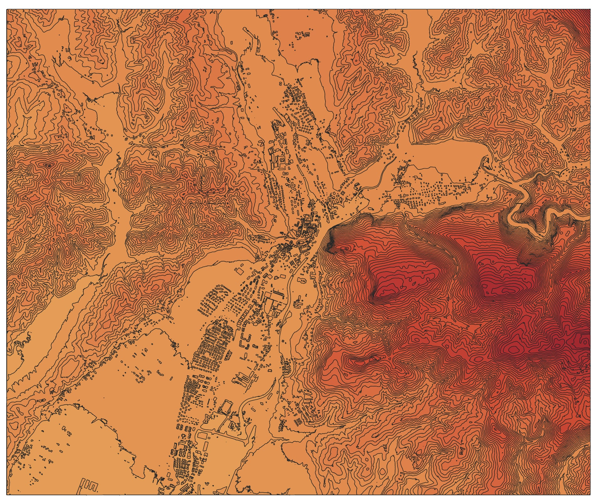

The map shows the city of Kamnik. Kamnik is located in Slovenia, north of Ljubljana. It is known as a medieval town and has two well-known castles: Mali Grad and Stari Grad. If you want more, check here: "https://en.wikipedia.org/wiki/Kamnik"
Detailed LiDAR analyses and project updates will be published here.